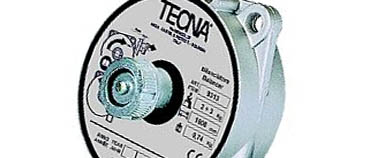
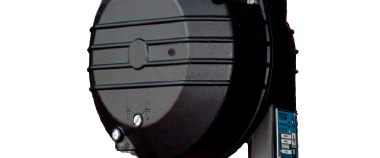
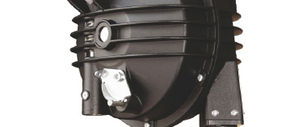

Para cargas ligeras!
Construidos según las normas DIN 15112 cumplen con todas las normas de seguridad en ambiente de trabajo. Las gamas X-LIGHT y LIGHT de Tecna soportan cargas desde 2 hasta 8 kg.
Cargas medianas!
Disponibles en una amplia gama, bajo demanda se producen equilibradores para uso especifico. Con la gama MEDIUM podemos trabajar con maquinarias colgante desde 4 hasta 25 kg.
Cargas pesadas!
STRONG y X-STRONG, esta gama de equilibradores industriales Tecna permiten trabajar con cargas colgantes desde 15 hasta 180 kg. según el modelo.